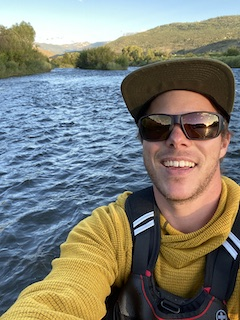

Welcome to my Portfolio!
My name is Jon Spencer. I am a new student at DU, enrolled in their coding bootcamp. I am currently learning the foundation of HTML, CSS, and Javascript. The coding world is very new to me, and I seem to be constantly playing catch up with what we learn in class. That being said I couldn't be more excited to devlop this skill and enter into a new career field.
Outside of class I enjoy many hobbies. My most recent obsession is fly fishing. I truly love the outdoors, and find extreme peace on a remote river. Often fishing leads to camping, which is another favorite hobby of mine.
When I am not off traveling or on a fishing trip, I enjoy spending time around the house, or with my soon to be fiancé. We share similar interest in the outdoors, and we have three beautiful dogs. If we aren't out hiking with the dog's you can usually find us at a restaurant. We really enjoy many different cuisines from around the world.